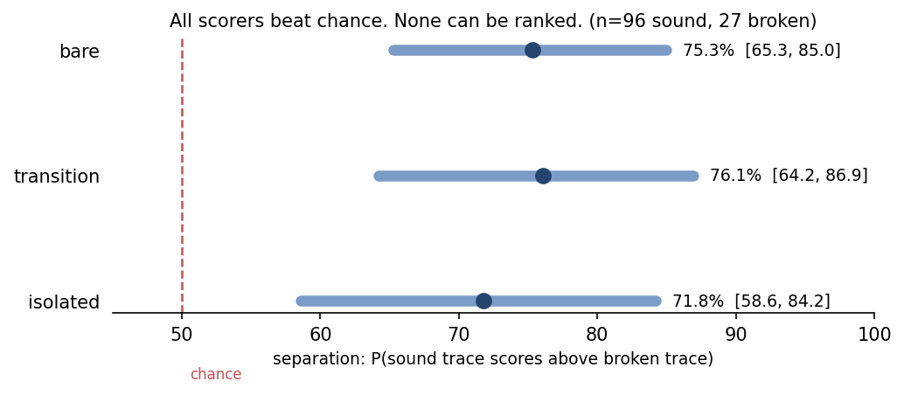
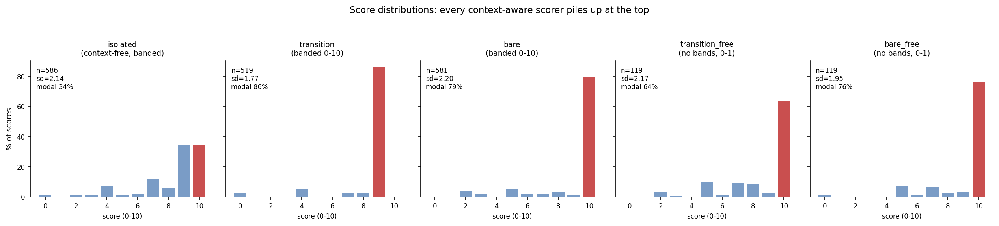

TAPR · Checkpoint 1 · Aug 2026
Going through the literature for this work, I noticed that the papers I read take the PRM at face value. They never ask whether the signal it provides is good enough on its own, and then they mix it with outcome rewards and report what happens. So this work isolates the process signal, the isolated single step reward, and compares it against a transition level reward of my own, before any mixing question is asked.
01
Score the transition, not the step: given everything seen so far, does this move follow?
Outcome only reward is incapable of catching poor reasoning, since models have shown to produce the right output, probably from memory, despite poor reasoning, and vice versa, right reasoning and wrong outcome. The isolated step scorer scores steps in isolation, without context, so steps can be locally correct but lead to totally poor reasoning overall. This is documented in multiple papers: Reward Granularity in RLVR (2607.02869), PROGRS (2604.02341), Samineni et al. (2510.18176).
So my idea was to first investigate the process reward itself, or think of a better one. I came up with TAPR, Transition Aware Process Reward.
TAPR rewards the transition (simplification, conclusion, substitution, implication) based on its validity. Given everything we have seen so far in the reasoning trace, does the transition follow, is it valid?
Hypothesis. The transition judge scorer catches poor reasoning much better than the isolated judge, and within outcome variance is more in the transition judge scores.
02
Eight calls that determine what this experiment measures. D5 and D8 I now think were wrong. D2, the control that can invalidate my own contribution, I borrowed after reading the InterWhen paper.
D1 · Inference only, no training
An earlier version trained the reward with GRPO. When that run underperformed, the cause could have been the signal, the mixing weight, the KL penalty, the learning rate or the seed. Nothing could be isolated, which is the same confound I am accusing the literature of. So Checkpoint 1 trains nothing: the same fixed traces are scored by different scorers and only the prompt changes.
This says nothing about downstream accuracy; it only measures the signal itself.
D2 · A control that can invalidate my own contribution, from InterWhen
The idea to add the bare scorer came after reading the
InterWhen paper, where I realised that the real judgement, that is what
should be done vs avoided, what is the right next step, ie a reasoning step, a
transition, a tool call, must lie with the agent or judge itself. In InterWhen, when
the human writes the policy document, they are doing the real heavy lifting when it
comes to judgment and its quality, and not the agent.
The same objection applies to me. If I hand the judge my three conditions, the
judgment is still mine, relocated to me and not removed. bare tests
that: same context, no criteria, just "does this move follow from what came before?"
If it scores as well as the defined version, my definition was not doing the work.
A judge that holds its own notion of a valid transition, with no human supplying one, is I feel actually the stronger version of the claim. What it would put pressure on is the three conditions, not the idea of scoring transitions.
Pre-registered before any results were seen. Nothing here settles
whether bare beats isolated: the intervals overlap, so all
three scorers are currently indistinguishable.
D3 · Prefix only enforced in code, not by instruction
A judge scoring step i receives steps[:i]. Asking a model
to ignore text it can see is not a control, because the information is still in
context. Here it is absent by construction.
D4 · 14B judge, not 7B
I started with the 7B Qwen as the judge, but found that it scored 10 out of 10 on 99% of the transitions. In one trace the model generated "7 days in a week" when the problem said 3 times a week. The 7B judge treated it as a fact and scored it, even though the underlying data in the problem said something else. It wrote "unsourced, but commonly known" and gave it 7 out of 10. The 14B judge scored 0 out of 10 on the same statement, correctly catching the contradiction, so I moved to 14B.
The diagnosis came from reading the judge's own text on a handful of traces, not from a systematic sweep, so the direction is clear but the threshold is not. The 7B calibration run, 30 traces and 357 calls, was discarded.
D5 · Bands, then no bands
The banded prompt used four bands: 0 to 3 when any premise contradicts the problem or is fabricated or the arithmetic is wrong, 4 to 6 when premises and arithmetic are fine but the move does not advance the problem, 7 to 8 for valid and advancing with minor issues, 9 to 10 when all three checks pass cleanly. Found the judge doesn't use the scale well and restricts itself to either a very low or a very high score. Moved to a 0 to 1 scale with no described bands.
Wrong call. This change is confounded and I did not
notice at the time. Going
from banded to unbanded changed five things at once: the bands, the scale, the
NA option, the three explicit checks, and the instruction to score low
when unsure. The 86% to 64% shift cannot be attributed to bands.
D6 · The judge can refuse to score
The transition judge returns NA when a step restates the problem
instead of inferring anything, so setup lines do not count as perfect transitions.
It used this on 64 of 586 calls, and on 24% of all first steps.
This makes the distributions unequal: transition is measured over 519 steps and isolated over 586, so they are not the same population of steps. The excluded steps are the ones that would have scored high, so removing them should lower transition's pile-up, and it is still 86%.
D7 · Lowest step score, not the average
Say the scorer notices one transition that is visibly wrong and gives it a low score, but every transition after that is fine. The mean averages it out and makes even the wrong trace look fine overall. The min catches that.
With most scores at the ceiling, a trace's score is decided by a single step, which is also where judge noise is largest. Whether the within outcome result is measuring reasoning or measuring which trace happened to get one step marked down is not something this data can separate.
D8 · Final answer as the ground truth
Traces were sorted into sound and broken by whether they reached the gold answer, with format failures pulled out of the broken group. It is mechanical and it is independent of every scorer, which is why I picked it: raw disagreement between two scorers tells you nothing without an external arbiter.
This is the one that broke the experiment. The final answer says the chain ended in the wrong place. It does not say where it went wrong. My claim is specifically about traces where every step looks fine and the chain still goes nowhere, and I never checked how many of the 27 have that shape. Section 05 works through what this costs.
03
36% of wrong answers here are format failures, not reasoning failures. Labelling reasoning by final answer mislabels a third of them.
Qwen2.5-3B generates 5 traces per question, started with 30 questions, and the scorers score those traces independently. Judge is Qwen2.5-14B-Instruct, 4-bit quantized, sampling off so scores are deterministic. 586 steps, 1,758 judge calls.
150 generated
-12 unparseable, no steps or no #### marker
────
138 scored
├─ 96 correct final answer
└─ 42 wrong final answer
├─ 15 format failures
└─ 27 genuinely broken reasoning
────
123 in the separation analysis, 96 sound and 27 broken
Of the 42 wrong answer traces, 15, that is 36%, were format failures. That is, the
reasoning trace reached the correct final value, computed 70,000 in one case, but
wrote #### 7.0 as the final answer. Any work that labels reasoning
quality by final answer correctness on this setup mislabels a third of its
failures.
04
All three scorers beat chance and none can be ranked. Within outcome spread, the metric that matters for training, went the wrong way.
Separation is the probability that a randomly chosen sound trace scores above a randomly chosen broken trace. 50% is chance. Format failures are removed from the broken group, leaving 96 sound and 27 broken. Intervals are bootstrap 95%.
| Scorer | Sound | Broken | Gap | Separation | 95% CI |
|---|---|---|---|---|---|
| isolated | 6.72 | 4.30 | 2.42 | 71.8% | 58.6 – 84.2 |
| transition | 8.18 | 4.60 | 3.58 | 76.1% | 64.2 – 86.9 |
| bare | 8.50 | 5.70 | 2.80 | 75.3% | 65.3 – 85.0 |
Every interval clears chance. Every interval also contains every other scorer's point estimate, so at this sample size the scorers cannot be ranked.

Traces of the same problem that reached the same final answer. If their scores are identical, the signal adds nothing over the outcome reward, because a group with zero reward variance produces zero advantage under GRPO and teaches the policy nothing. This is the metric that matters most for the eventual training application.
| Scorer | Groups | Mean SD | Zero variance |
|---|---|---|---|
| isolated | 34 | 2.07 | 5 / 34 |
| transition | 33 | 1.54 | 9 / 33 |
| bare | 34 | 1.43 | 15 / 34 |
The prediction was that transition would produce more spread than isolated. It produced less.
| Scorer | Scale | Scored | NA | Modal | SD | Distinct |
|---|---|---|---|---|---|---|
| isolated | 0 to 10, banded | 586 | 0 | 34.3% | 2.14 | 10 |
| transition | 0 to 10, banded | 519 | 64 | 86.3% | 1.77 | 8 |
| bare | 0 to 10, no criteria | 581 | 0 | 79.3% | 2.20 | 9 |
| transition_free | 0 to 1, unbanded | 119 | 0 | 63.9% | 2.17 | 8 |
| bare_free | 0 to 1, no criteria | 119 | 0 | 76.5% | 1.95 | 7 |

The two scales never ran on the same traces. The banded scorers covered 138 traces and the unbanded scorers covered 30, so no banded against unbanded number here compares the same problems.
05
The hypothesis failed, but the null does not mean the signal is weak. I selected the broken group by final answer, and my claim is about structure. The test ran on the wrong traces.
At n = 27 broken traces the CIs overlap and the scorers cannot be ranked, though each beats chance. Within outcome variance went the other way from the prediction.
The bigger problem is D8, what went into the broken group. My claim is about traces where every step looks fine on its own but the chain still goes nowhere. That is the only shape where a transition judge can beat an isolated one, because a step that is wrong by itself gets caught either way. A trace lands in my broken group whether it did bad arithmetic in step 2 or drifted coherently across five steps.
If most of them break at a single visible step, both judges catch them and the scores come out close, which is what happened. This was a null result but on the wrong population of traces, so I feel I need to measure a different bucket of traces. The runs are correct and the numbers are sound, but the problem sits earlier, in which traces went in, chosen by the wrong criterion.
The same error runs the other way in the sound group. Those 96 traces reached the correct answer and were never checked, so some got there by a wrong route. That is exactly what the 15 format failures show, in reverse.
The scale problem doesn't explain it either. Removing the bands raised the spread, 86% down to 64% on the modal value, so something in that change was doing work. But the pile-up did not go away, the change touched five things at once, and the unbanded test ran on 30 traces while the banded run used 138.
The stronger objection is that the isolated judge is also banded and has the widest spread of any scorer, so bands cannot be the whole story. What separates isolated from the rest is that it never sees the prior chain. That suggests a different reading: given the full chain, most individual moves genuinely do follow, so a judge asked "does this follow" answers yes almost always. If that is right, broken transitions are a rare event on GSM8K and the ceiling is a property of the task rather than a defect in the prompt.
Both readings, the rare event one and the wrong population one, predict the same thing: the information is concentrated in a small number of traces I have not identified. That is what the next step goes after.
06
Label the traces by hand and split the broken ones by where they break. Nothing else is worth running until that is done.
Reading the steps is the only source of step level truth that is not the judge I am trying to evaluate. Every trace goes into one of three groups: sound, broken with an identifiable bad step, and broken with no bad step but going nowhere anyway. Then separation is computed twice, each broken group against the sound group.
The prediction that follows from the claim: on the first broken group the two judges perform similarly, because a locally visible error is visible either way. On the second, transition beats isolated. If both groups look the same, TAPR is dead.
Labelling also gives two things the experiment currently assumes: judge accuracy measured against labels rather than resting on the 7 days in a week anecdote, and a count of how many of the 96 sound traces got there by a wrong route.
More dimensions in the validity definition. The current definition has three parts and most steps satisfy all three, which is part of why the scores bunch at the top. A finer definition would give the judge somewhere to put a step that is valid but weak, and that headroom is what within outcome variance needs.
Deconfound the band test. Change only the bands, keeping the 0 to
10 scale, the NA option, the three checks and the instruction to score
low when unsure. Until that runs, nothing can be said about bands.
More questions. Everything here rests on 27 genuinely broken traces. At the observed rate of roughly 30% wrong answers, of which about two thirds are real reasoning failures, reaching 85 broken traces needs somewhere near 450 generations. That is the cheapest way to make any ranking claim possible at all.
Run the unbanded scorers on the full set. The 0 to 1 result is from 30 traces and cannot be compared directly with the 138 trace banded run.
The perturbation idea. Everything above still rests on a 14B model's opinion, and the only evidence that opinion is any good is the one 7 days in a week trace. I cannot validate the judge with the judge. One way out is to edit a prior step, delete everything after it, regenerate, and see whether the next step changes. A step that was genuinely derived from its context should break when its context breaks, and no judge is asked anything.
What stops this from being straightforward is that changing a value and changing surface form both move the output. If I rewrite white = 1 to white = 4 and the next step changes, the model might be reading the premise, or it might be adding whichever number it saw last. Separating those needs a second kind of edit, one that changes the wording or the ordering while leaving the arithmetic alone, and I do not yet know whether that separation holds at the level of a single step.
07
An earlier version trained the reward instead of validating it, and could not tell whether the signal was any good. That is why this checkpoint exists.
Built during a hackathon: Qwen2.5-3B fine tuned with GRPO on GSM8K using a live 7B judge, transition reward mixed into the outcome reward. The one clean result was mechanical. Outcome only training left about half of all problem groups with zero reward variance, and adding the transition reward drove that to near zero on both datasets. The accuracy results were weaker: in-domain GSM8K moved by less than half a point, and a cross-task gap on StrategyQA came from a single seed with a confidence interval that includes zero.
All it showed was that adding something dense changed the optimization. That work is in the repository.
08